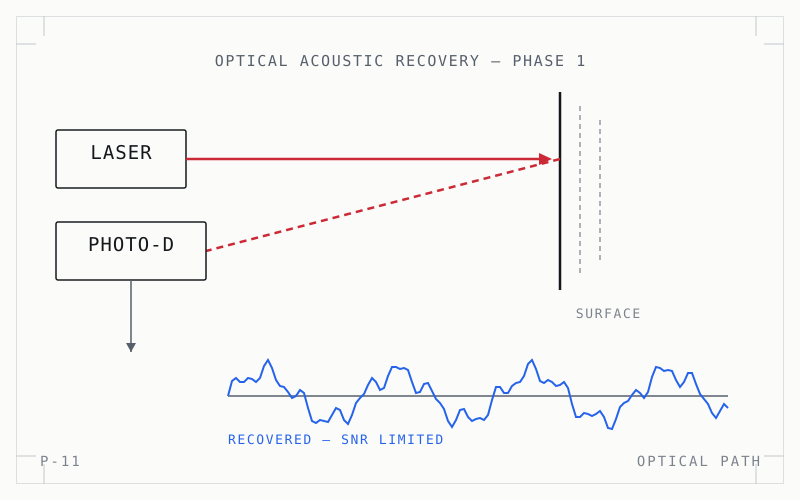

← All projects
The optical path and the recovered trace — signal-to-noise is the whole problem.
P-11 · electrical
Laser Microphone
Phase 1 of optical-acoustic signal recovery: reading sound off a surface by the way it modulates a reflected beam.
- Sheet
- P-11
- Year
- 2025
- Discipline
- electrical

(opens full size in a new tab)- Problem
- Recovering intelligible audio from surface vibration means fighting an appalling signal-to-noise ratio at every stage.
- Scope
- Build the optical path and the recovery chain, and characterise where the signal survives.
- Role
- Optical bench setup and the analog signal recovery front end.
- Result
- Phase 1 recovery demonstrated, with the noise-dominant stages identified.
- Next pass
- Phase 2 — filtering and demodulation for intelligibility.